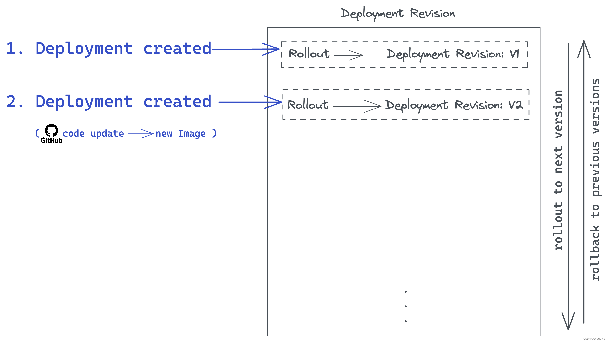
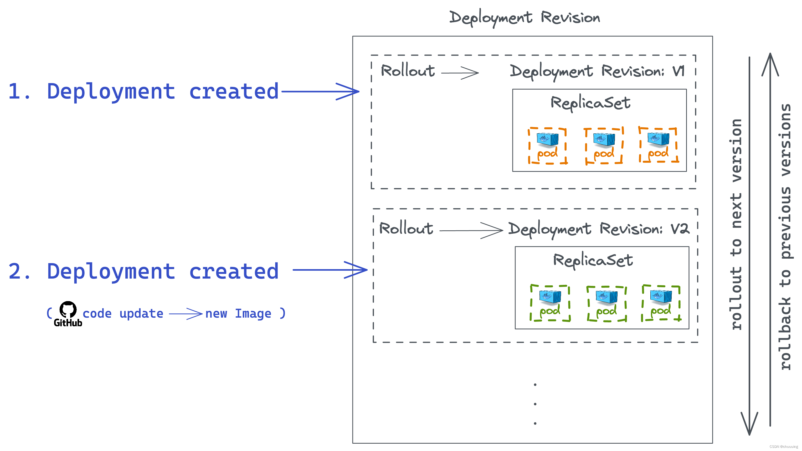

5.Pod设计
1. 标签 & 选择器¶
- 标签（
labels） 帮助我们标记资源 - 选择器（
selector） 用于删选过滤带某些 标签 的资源
假设某个Pod带有两个标签：app=App1和function=frontend，YAML定义文件如下：
apiVersion: v1
kind: Pod
metadata:
name: simple-webapp
labels:
app: App1
function: frontend
spec:
...
Info
- 如有多个
selector，使用逗号隔开，中间没有空格！！ - 下面的例子中，only pods that have both labels (
app=App1andenv=dev) will be returned.
kubectl get pods --selector app=App1,env=dev
举例：ReplicaSet对标签的使用¶
注意在ReplicaSet的定义中， 有两个labels：（1）给ReplicaSet，（2）才是Pod的。
apiVersion: apps/v1
kind: ReplicaSet
metadata:
name: simple-webapp
labels: # （1）ReplicaSet 的标签
app: App1
function: frontend
spec:
replicas: 3
selector: # 选择器
matchLabels:
app: App1
template:
metadata:
labels: # （2）Pod 的标签
app: App1
function: frontend
spec:
containers:
- name: simple-webapp
image: simple-webapp
Note
selector.matchLabels: 定义 ReplicaSet 负责管理哪些 Pod。
逻辑：Kubernetes 会查找所有 已存在的 Pod，如果它们的 标签（Labels）包含有符合的 matchLabels （这里是 app=App1），那么 ReplicaSet 会接管它们。
Warning
selector.matchLabels中如果有多个条件，则他负责的Pod中应该包含 所有的 标签
2. 注释¶
注释（annotations）用于记录其他详细信息。 例如：名称，版本及其他
metadata:
name: simple-webapp
labels:
app: App1
function: frontend
annotations: # 注释
buildversion: 1.34
Label vs Annotation
- Label: 用来标记和筛选资源。一般内容较少，适合简洁的标记。
- Annotation: 用来存储额外的元数据，但这些数据不参与筛选或匹配。比如: 版本信息、作者、变更时间等，供人类或工具查看。内容较多，可以包含长文本或复杂信息。
3. Deployment, Rollout, Rollback¶
当我们第一次创建Deployment时，会触发一个Rollout（名词：版本部署），从而生成一个Deployment Revision（可以理解为Deployment的一个版本）。假设现在开发者修改了github上的代码，该更新会触发新一个Rollout，从而生成新版本的Deployment Revision。

Note
查看当前Rollout状态：
kubectl rollout status deployment/[DeploymentName]
Rollout：
# ⚠️ 可用 `--revision=1` 指定查看 Deployment 的某个特定版本
kubectl rollout history deployment/[DeploymentName]
deployment.apps/[DeploymentName]
REVISION CHANGE-CAUSE
1 kubectl apply --record -f deployment.yaml
2 <none> # 这里执行命令的时候忘了写 --record， 所以信息丢失了
kubectl rollout undo deployment/[DeploymentName]
部署政策（Deployment Strategy）¶
假设我们部署了一个网站在集群上，因为访问量大，我们将App复制了5份（replicas）。现在开发者修改了源代码，想要更新网站。有以下两种更新/部署方式可供选择：
-
Rolling Update政策（默认政策）：删除一个旧的App，重新部署一个新的App，逐个进行更新
apiVersion: apps/v1 kind: Deployment metadata: name: simple-web spec: strategy: # 部署政策 type: RollingUpdate rollingUpdate: # 可定义更细节的内容 maxSurge: 25% maxUnavailable: 25% -
Recreate政策：删除旧的5份App，再重新部署新的5份App。不推荐，删除旧的之后，新的部署完成之前，用户无法访问网站
apiVersion: apps/v1 kind: Deployment metadata: name: simple-web spec: strategy: # 部署政策 type: Recreate
Note
部署政策可以用 k describe deployment/[DeploymentName] 查看
new Deployment¶
更新github源码会自动触发新部署，当然我们也可以修改镜像版本，标签（labels）等。我们可以：
（1）直接编辑YAML文件
# 先修改deployment-definition.yaml文件，再运行以下命令：
kubectl apply -f deployment-definition.yaml
k的命令直接修改特定资源，比如镜像
# ⚠可用 `--record` 给修改添加描述，写到Deployment文件中，相当于git commit -m “描述”
kubectl set image deployment/[DeploymentName] nginx=nginx:1.9.1
ReplicaSet¶
Deployment 为 Pod 和 ReplicaSet 提供声明式更新。三者关系如下：

🪆之前我们提到过套娃：Pod < ReplicaSet < Deployment
Note
查看replicasets：
kubectl get replicasets
4. 一次性的任务¶
还记得我们之前提过的initContainer吗？这类特殊的容器在完成某一次性的任务后自杀。例如，执行计算、处理图像、对大型数据执行某种分析、生成报告和发送电子邮件等
--> 这些工作负载的生命周期很短。Docker也可以跑一次性任务：
Docker中的一次性任务
下面的容器在计算3+2，在Ctrl+C之后被关停。
docker run ubuntu expr 3+2
docker ps -a查看停了的容器，大概能看到类似结果：可以在STATUS里看到该容器已关停，结束的代码为0意味着运行成功，没有bug。
CONTAINER ID IMAGE COMMAND CREATED STATUS PORTS NAMES
3192d2048 ubuntu "expr 3+2" 30 seconds ago Exited(0) 41 seconds ago crazy_cat
k8s中的一次性任务
❓与Docker同样的任务，以我们现在的知识，如果不用initContainer，用普通的Container跑，是怎么样的呢？
❗先定义Pod，再用k create -f pod.yaml执行
# pod.yaml
apiVersion: v1
kind: Pod
metadata:
name: math-pod
spec:
containers:
- name: math-add
image: ubuntu
command: ['expr', '3', '+',]
restartPolicy: Always # 默认的Pod重启策略是Always，还可以是Never或者OnFailure
这个操作的结果是：Kubernetes不断的想要重建容器，以保证容器的数量为1，而被新建的容器则每次都在执行完计算任务后自杀。以此往复，直到达到阈值。Kubernetes 希望App永远存在。
Pod 的默认行为是尝试重新启动容器以保持其运行。该行为由 Pod 上的重启策略（restartPolicy）定义，默认情况下设置为 always。
➡️➡️➡️ 解决方法：我们可以将它修改成Never或者OnFailure，以阻止容器的重建 --> 这个解决方法，不是特别的优雅。更 优雅 的解决方法是使用 Job 或者 CronJob
Job¶
然而，一般来说，一次性的任务不会是计算2+3那么简单，一般会是大量数据的批处理等复杂但只需执行一次的任务，这里我们引入Job这个概念。
Job VS ReplicaSet
`Job`可与`ReplicaSet`进行类比，只不过`Job`中的Pod做的一次性任务，而`ReplicaSet`中的Pod运行的是持续性App。
<img src="../ckad-5/replicaset_job.png" width=600 />
Note
- `.spec.completions: 3`：3个任务，由3个Pod执行，Pod按序创建，第二个 Pod 仅在第一个 Pod 完成后创建。如有Pod创建失败，Job会持续新建Pod直到有指定数量的`completed`的Pod为止
- `.spec.parallelism: 3`：3个任务，由3个Pod执行，**并行** 运行 Pod
- `.spec.backoffLimit: 15`：如果没有一次Pod执行成功，最多执行Pod15次。所以Pod停止执行的情况有两种：要么有一次成功了，要么次数超过15了
用k create -f job.yaml新建Job。可以通过以下命令查看：
kubectl get jobs
NAME DESIRED SUCCESSFUL AGE
math-add-job 3 0 38s
因为Job也同时新建了Container，我们可以通过k get pods查看，结果如下。RESTARTS为0，因为Pod永远不会被重建。
NAME READY STATUS RESTARTS AGE
math-add-job-187pn 0/1 Completed 0 2m
math-add-job-230ds 0/1 Completed 0 2m
math-add-job-948xc 0/1 Completed 0 2m
查看expr 3+2的计算结果：
kubectl logs math-add-job-187pn
删除Job：
kubectl delete job math-add-job
Job定义文件
kubectl create job math-add-job \
--image=[ImageName] \
--dry-run=client -o yaml \
> math-add-job.yaml
| Job | CronJob |
|---|---|
| Job的定义在`.spec.template.spec.containers` | CronJob的定义在`.spec.jobTemplate.spec.template.spec.containers` |
|
|
|
|
CronJobs¶
这个更高级了姐妹们，CronJob是一个可以被预约或者定期执行的Job。
Note
.spec.schedule时间格式从小到大, 如下："[minute (0-59)] [hour (0-23)] [day of the month (1-31)] [month (1-12)] [weekday (0-6)]"- ⚠️现在 CronJob 定义中有三个
spec
用k create -f crobjob.yaml新建Job。可以通过以下命令查看：
kubectl get cronjob
NAME SCHEUDLE SUSPEND ACTIVE
reporting-cron-job */1 * * * * False 0
>>> 本章kubectl命令整理¶
标签&选择器
k get pods --selector app=App1,env=dev其中--selector和 -l 效果一样，都是用标签对资源进行选择
Rollout相关
k rollout status deployment/[DeploymentName] 查看状态
k rollout history deployment/[DeploymentName] 查看历史Rollout，可用--revision=1指定版本
k rollout undo deployment/[DeploymentName] 回滚到上一个版本
Deployment相关
k set image deployment/[DeploymentName] nginx=nginx:1.9.1 修改镜像资源
ReplicaSet相关
k get replicasets列出所有replicasets
Job相关
k create job [JobName] --image=[ImageName] --dry-run=client -o yaml > [JobName].yaml 生成Job定义文件
k get jobs列出所有jobs
k delete job [JobName]删除某job
CronJob相关
k get cronjob